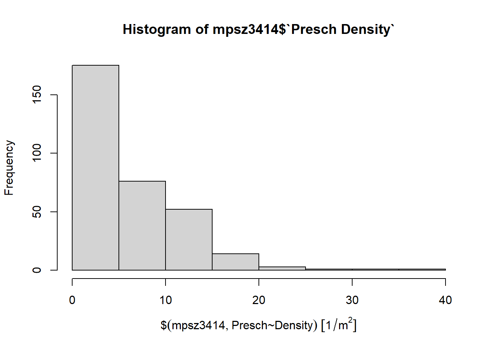

pacman::p_load(tidyverse,sf)Hands-on Exercise 1
Getting Started
Installing and Loading R Packages
In this section, I will install and load tidyverse and sf packages.
Importing a geospatial data in shapefile format
mpsz <- st_read(dsn = "data/geospatial", layer = "MP14_SUBZONE_WEB_PL")Reading layer `MP14_SUBZONE_WEB_PL' from data source
`C:\zoe-chia\IS415\Hands-on_Ex\Hands-on_Ex01\data\geospatial'
using driver `ESRI Shapefile'
Simple feature collection with 323 features and 15 fields
Geometry type: MULTIPOLYGON
Dimension: XY
Bounding box: xmin: 2667.538 ymin: 15748.72 xmax: 56396.44 ymax: 50256.33
Projected CRS: SVY21cyclingpath <- st_read(dsn = "data/geospatial", layer = "CyclingPathGazette")Reading layer `CyclingPathGazette' from data source
`C:\zoe-chia\IS415\Hands-on_Ex\Hands-on_Ex01\data\geospatial'
using driver `ESRI Shapefile'
Simple feature collection with 2248 features and 2 fields
Geometry type: MULTILINESTRING
Dimension: XY
Bounding box: xmin: 11854.32 ymin: 28347.98 xmax: 42626.09 ymax: 48948.15
Projected CRS: SVY21Importing a GIS data in kml format
preschool = st_read("data/geospatial/preschools-location.kml")Reading layer `PRESCHOOLS_LOCATION' from data source
`C:\zoe-chia\IS415\Hands-on_Ex\Hands-on_Ex01\data\geospatial\preschools-location.kml'
using driver `KML'
Simple feature collection with 1925 features and 2 fields
Geometry type: POINT
Dimension: XYZ
Bounding box: xmin: 103.6824 ymin: 1.247759 xmax: 103.9897 ymax: 1.462134
z_range: zmin: 0 zmax: 0
Geodetic CRS: WGS 84Checking the content of a simple feature data frame
st_geometry(mpsz)Geometry set for 323 features
Geometry type: MULTIPOLYGON
Dimension: XY
Bounding box: xmin: 2667.538 ymin: 15748.72 xmax: 56396.44 ymax: 50256.33
Projected CRS: SVY21
First 5 geometries:glimpse(mpsz)Rows: 323
Columns: 16
$ OBJECTID <int> 1, 2, 3, 4, 5, 6, 7, 8, 9, 10, 11, 12, 13, 14, 15, 16, 17, …
$ SUBZONE_NO <int> 1, 1, 3, 8, 3, 7, 9, 2, 13, 7, 12, 6, 1, 5, 1, 1, 3, 2, 2, …
$ SUBZONE_N <chr> "MARINA SOUTH", "PEARL'S HILL", "BOAT QUAY", "HENDERSON HIL…
$ SUBZONE_C <chr> "MSSZ01", "OTSZ01", "SRSZ03", "BMSZ08", "BMSZ03", "BMSZ07",…
$ CA_IND <chr> "Y", "Y", "Y", "N", "N", "N", "N", "Y", "N", "N", "N", "N",…
$ PLN_AREA_N <chr> "MARINA SOUTH", "OUTRAM", "SINGAPORE RIVER", "BUKIT MERAH",…
$ PLN_AREA_C <chr> "MS", "OT", "SR", "BM", "BM", "BM", "BM", "SR", "QT", "QT",…
$ REGION_N <chr> "CENTRAL REGION", "CENTRAL REGION", "CENTRAL REGION", "CENT…
$ REGION_C <chr> "CR", "CR", "CR", "CR", "CR", "CR", "CR", "CR", "CR", "CR",…
$ INC_CRC <chr> "5ED7EB253F99252E", "8C7149B9EB32EEFC", "C35FEFF02B13E0E5",…
$ FMEL_UPD_D <date> 2014-12-05, 2014-12-05, 2014-12-05, 2014-12-05, 2014-12-05…
$ X_ADDR <dbl> 31595.84, 28679.06, 29654.96, 26782.83, 26201.96, 25358.82,…
$ Y_ADDR <dbl> 29220.19, 29782.05, 29974.66, 29933.77, 30005.70, 29991.38,…
$ SHAPE_Leng <dbl> 5267.381, 3506.107, 1740.926, 3313.625, 2825.594, 4428.913,…
$ SHAPE_Area <dbl> 1630379.27, 559816.25, 160807.50, 595428.89, 387429.44, 103…
$ geometry <MULTIPOLYGON [m]> MULTIPOLYGON (((31495.56 30..., MULTIPOLYGON (…head(mpsz, n=5)Simple feature collection with 5 features and 15 fields
Geometry type: MULTIPOLYGON
Dimension: XY
Bounding box: xmin: 25867.68 ymin: 28369.47 xmax: 32362.39 ymax: 30435.54
Projected CRS: SVY21
OBJECTID SUBZONE_NO SUBZONE_N SUBZONE_C CA_IND PLN_AREA_N
1 1 1 MARINA SOUTH MSSZ01 Y MARINA SOUTH
2 2 1 PEARL'S HILL OTSZ01 Y OUTRAM
3 3 3 BOAT QUAY SRSZ03 Y SINGAPORE RIVER
4 4 8 HENDERSON HILL BMSZ08 N BUKIT MERAH
5 5 3 REDHILL BMSZ03 N BUKIT MERAH
PLN_AREA_C REGION_N REGION_C INC_CRC FMEL_UPD_D X_ADDR
1 MS CENTRAL REGION CR 5ED7EB253F99252E 2014-12-05 31595.84
2 OT CENTRAL REGION CR 8C7149B9EB32EEFC 2014-12-05 28679.06
3 SR CENTRAL REGION CR C35FEFF02B13E0E5 2014-12-05 29654.96
4 BM CENTRAL REGION CR 3775D82C5DDBEFBD 2014-12-05 26782.83
5 BM CENTRAL REGION CR 85D9ABEF0A40678F 2014-12-05 26201.96
Y_ADDR SHAPE_Leng SHAPE_Area geometry
1 29220.19 5267.381 1630379.3 MULTIPOLYGON (((31495.56 30...
2 29782.05 3506.107 559816.2 MULTIPOLYGON (((29092.28 30...
3 29974.66 1740.926 160807.5 MULTIPOLYGON (((29932.33 29...
4 29933.77 3313.625 595428.9 MULTIPOLYGON (((27131.28 30...
5 30005.70 2825.594 387429.4 MULTIPOLYGON (((26451.03 30...Plotting the Geospatial Data
The default plot of an sf object is a multi-plot of all attributes, up to a maximum of 9 attributes.
plot(mpsz)
Plot only the geometry by using the code chunk below
plot(st_geometry(mpsz))
Plot the sf object by using a specific attribute as shown in the code chunk below.
plot(mpsz["PLN_AREA_N"])
Working with Projection
Assigning EPSG code to a simple feature data frame
Check data frame:
st_crs(mpsz)Coordinate Reference System:
User input: SVY21
wkt:
PROJCRS["SVY21",
BASEGEOGCRS["SVY21[WGS84]",
DATUM["World Geodetic System 1984",
ELLIPSOID["WGS 84",6378137,298.257223563,
LENGTHUNIT["metre",1]],
ID["EPSG",6326]],
PRIMEM["Greenwich",0,
ANGLEUNIT["Degree",0.0174532925199433]]],
CONVERSION["unnamed",
METHOD["Transverse Mercator",
ID["EPSG",9807]],
PARAMETER["Latitude of natural origin",1.36666666666667,
ANGLEUNIT["Degree",0.0174532925199433],
ID["EPSG",8801]],
PARAMETER["Longitude of natural origin",103.833333333333,
ANGLEUNIT["Degree",0.0174532925199433],
ID["EPSG",8802]],
PARAMETER["Scale factor at natural origin",1,
SCALEUNIT["unity",1],
ID["EPSG",8805]],
PARAMETER["False easting",28001.642,
LENGTHUNIT["metre",1],
ID["EPSG",8806]],
PARAMETER["False northing",38744.572,
LENGTHUNIT["metre",1],
ID["EPSG",8807]]],
CS[Cartesian,2],
AXIS["(E)",east,
ORDER[1],
LENGTHUNIT["metre",1,
ID["EPSG",9001]]],
AXIS["(N)",north,
ORDER[2],
LENGTHUNIT["metre",1,
ID["EPSG",9001]]]]Assign correct EPSG to the dataframe mpsz by using st_set_crs()
mpsz3414 <- st_set_crs(mpsz, 3414)Check if the changes have been applied:
st_crs(mpsz)Coordinate Reference System:
User input: SVY21
wkt:
PROJCRS["SVY21",
BASEGEOGCRS["SVY21[WGS84]",
DATUM["World Geodetic System 1984",
ELLIPSOID["WGS 84",6378137,298.257223563,
LENGTHUNIT["metre",1]],
ID["EPSG",6326]],
PRIMEM["Greenwich",0,
ANGLEUNIT["Degree",0.0174532925199433]]],
CONVERSION["unnamed",
METHOD["Transverse Mercator",
ID["EPSG",9807]],
PARAMETER["Latitude of natural origin",1.36666666666667,
ANGLEUNIT["Degree",0.0174532925199433],
ID["EPSG",8801]],
PARAMETER["Longitude of natural origin",103.833333333333,
ANGLEUNIT["Degree",0.0174532925199433],
ID["EPSG",8802]],
PARAMETER["Scale factor at natural origin",1,
SCALEUNIT["unity",1],
ID["EPSG",8805]],
PARAMETER["False easting",28001.642,
LENGTHUNIT["metre",1],
ID["EPSG",8806]],
PARAMETER["False northing",38744.572,
LENGTHUNIT["metre",1],
ID["EPSG",8807]]],
CS[Cartesian,2],
AXIS["(E)",east,
ORDER[1],
LENGTHUNIT["metre",1,
ID["EPSG",9001]]],
AXIS["(N)",north,
ORDER[2],
LENGTHUNIT["metre",1,
ID["EPSG",9001]]]]Transforming the projection of preschool from wgs84 to svy21
preschool3414 <- st_transform(preschool, crs = 3414)
st_crs(preschool3414)Coordinate Reference System:
User input: EPSG:3414
wkt:
PROJCRS["SVY21 / Singapore TM",
BASEGEOGCRS["SVY21",
DATUM["SVY21",
ELLIPSOID["WGS 84",6378137,298.257223563,
LENGTHUNIT["metre",1]]],
PRIMEM["Greenwich",0,
ANGLEUNIT["degree",0.0174532925199433]],
ID["EPSG",4757]],
CONVERSION["Singapore Transverse Mercator",
METHOD["Transverse Mercator",
ID["EPSG",9807]],
PARAMETER["Latitude of natural origin",1.36666666666667,
ANGLEUNIT["degree",0.0174532925199433],
ID["EPSG",8801]],
PARAMETER["Longitude of natural origin",103.833333333333,
ANGLEUNIT["degree",0.0174532925199433],
ID["EPSG",8802]],
PARAMETER["Scale factor at natural origin",1,
SCALEUNIT["unity",1],
ID["EPSG",8805]],
PARAMETER["False easting",28001.642,
LENGTHUNIT["metre",1],
ID["EPSG",8806]],
PARAMETER["False northing",38744.572,
LENGTHUNIT["metre",1],
ID["EPSG",8807]]],
CS[Cartesian,2],
AXIS["northing (N)",north,
ORDER[1],
LENGTHUNIT["metre",1]],
AXIS["easting (E)",east,
ORDER[2],
LENGTHUNIT["metre",1]],
USAGE[
SCOPE["Cadastre, engineering survey, topographic mapping."],
AREA["Singapore - onshore and offshore."],
BBOX[1.13,103.59,1.47,104.07]],
ID["EPSG",3414]]Importing and Converting an Aspatial Data
Importing apatial data
listings <- read_csv("data/aspatial/listings.csv")
list(listings)[[1]]
# A tibble: 4,161 × 75
id listing…¹ scrap…² last_…³ source name descr…⁴ neigh…⁵ pictu…⁶ host_id
<dbl> <chr> <dbl> <chr> <chr> <chr> <chr> <chr> <chr> <dbl>
1 50646 https://… 2.02e13 23/09/… previ… Plea… Fully … The se… https:… 227796
2 71609 https://… 2.02e13 22/09/… city … Ensu… For 3 … <NA> https:… 367042
3 71896 https://… 2.02e13 22/09/… city … B&B … <b>The… <NA> https:… 367042
4 71903 https://… 2.02e13 22/09/… city … Room… Like y… Quiet … https:… 367042
5 275344 https://… 2.02e13 22/09/… city … 15 m… Lovely… Bus st… https:… 1439258
6 289234 https://… 2.02e13 22/09/… city … Book… This w… A quie… https:… 367042
7 294281 https://… 2.02e13 22/09/… city … 5 mi… I have… <NA> https:… 1521514
8 324945 https://… 2.02e13 22/09/… city … Cozy… <b>The… <NA> https:… 1439258
9 330089 https://… 2.02e13 22/09/… city … Cozy… A unit… <NA> https:… 1439258
10 330095 https://… 2.02e13 22/09/… city … 10 m… Cosy, … Near I… https:… 1439258
# … with 4,151 more rows, 65 more variables: host_url <chr>, host_name <chr>,
# host_since <chr>, host_location <chr>, host_about <chr>,
# host_response_time <chr>, host_response_rate <chr>,
# host_acceptance_rate <chr>, host_is_superhost <lgl>,
# host_thumbnail_url <chr>, host_picture_url <chr>, host_neighbourhood <chr>,
# host_listings_count <dbl>, host_total_listings_count <dbl>,
# host_verifications <chr>, host_has_profile_pic <lgl>, …listings_sf <- st_as_sf(listings, coords = c("longitude", "latitude"), crs=4326)%>%
st_transform(crs=3414)glimpse(listings_sf)Rows: 4,161
Columns: 74
$ id <dbl> 50646, 71609, 71896, 7190…
$ listing_url <chr> "https://www.airbnb.com/r…
$ scrape_id <dbl> 2.02209e+13, 2.02209e+13,…
$ last_scraped <chr> "23/09/2022", "22/09/2022…
$ source <chr> "previous scrape", "city …
$ name <chr> "Pleasant Room along Buki…
$ description <chr> "Fully furnished bedroom …
$ neighborhood_overview <chr> "The serenity & quiet sur…
$ picture_url <chr> "https://a0.muscache.com/…
$ host_id <dbl> 227796, 367042, 367042, 3…
$ host_url <chr> "https://www.airbnb.com/u…
$ host_name <chr> "Sujatha", "Belinda", "Be…
$ host_since <chr> "08/09/2010", "29/01/2011…
$ host_location <chr> "Singapore", "Singapore",…
$ host_about <chr> "I am a working professio…
$ host_response_time <chr> "a few days or more", "wi…
$ host_response_rate <chr> "0%", "100%", "100%", "10…
$ host_acceptance_rate <chr> "N/A", "100%", "100%", "1…
$ host_is_superhost <lgl> FALSE, FALSE, FALSE, FALS…
$ host_thumbnail_url <chr> "https://a0.muscache.com/…
$ host_picture_url <chr> "https://a0.muscache.com/…
$ host_neighbourhood <chr> "Bukit Timah", "Tampines"…
$ host_listings_count <dbl> 1, 6, 6, 6, 44, 6, 7, 44,…
$ host_total_listings_count <dbl> 4, 15, 15, 15, 57, 15, 8,…
$ host_verifications <chr> "['email', 'phone', 'work…
$ host_has_profile_pic <lgl> TRUE, TRUE, TRUE, TRUE, T…
$ host_identity_verified <lgl> TRUE, TRUE, TRUE, TRUE, T…
$ neighbourhood <chr> "Singapore, Singapore", N…
$ neighbourhood_cleansed <chr> "Bukit Timah", "Tampines"…
$ neighbourhood_group_cleansed <chr> "Central Region", "East R…
$ property_type <chr> "Private room in rental u…
$ room_type <chr> "Private room", "Private …
$ accommodates <dbl> 2, 6, 1, 2, 1, 4, 2, 1, 1…
$ bathrooms <lgl> NA, NA, NA, NA, NA, NA, N…
$ bathrooms_text <chr> "1 bath", "1 private bath…
$ bedrooms <dbl> 1, 2, 1, 1, 1, 3, 1, 1, N…
$ beds <dbl> 1, 3, 1, 2, 1, 5, 1, 1, 1…
$ amenities <chr> "[\"Gym\", \"Washer\", \"…
$ price <chr> "$80.00", "$145.00", "$85…
$ minimum_nights <dbl> 92, 92, 92, 92, 60, 92, 9…
$ maximum_nights <dbl> 730, 1125, 1125, 1125, 99…
$ minimum_minimum_nights <dbl> 92, 92, 92, 92, 60, 92, 9…
$ maximum_minimum_nights <dbl> 92, 92, 92, 92, 60, 92, 9…
$ minimum_maximum_nights <dbl> 730, 1125, 1125, 1125, 99…
$ maximum_maximum_nights <dbl> 730, 1125, 1125, 1125, 99…
$ minimum_nights_avg_ntm <dbl> 92, 92, 92, 92, 60, 92, 9…
$ maximum_nights_avg_ntm <dbl> 730, 1125, 1125, 1125, 99…
$ calendar_updated <lgl> NA, NA, NA, NA, NA, NA, N…
$ has_availability <lgl> TRUE, TRUE, TRUE, TRUE, T…
$ availability_30 <dbl> 30, 5, 0, 30, 0, 0, 30, 5…
$ availability_60 <dbl> 60, 35, 1, 60, 0, 0, 60, …
$ availability_90 <dbl> 90, 65, 1, 90, 21, 10, 90…
$ availability_365 <dbl> 365, 340, 265, 365, 296, …
$ calendar_last_scraped <chr> "23/09/2022", "22/09/2022…
$ number_of_reviews <dbl> 18, 20, 24, 47, 14, 12, 1…
$ number_of_reviews_ltm <dbl> 0, 0, 0, 0, 1, 0, 0, 3, 2…
$ number_of_reviews_l30d <dbl> 0, 0, 0, 0, 0, 0, 0, 0, 0…
$ first_review <chr> "18/04/2014", "19/12/2011…
$ last_review <chr> "26/12/2014", "17/01/2020…
$ review_scores_rating <dbl> 4.56, 4.44, 4.16, 4.41, 4…
$ review_scores_accuracy <dbl> 4.72, 4.37, 4.22, 4.39, 4…
$ review_scores_cleanliness <dbl> 4.78, 4.00, 4.09, 4.52, 4…
$ review_scores_checkin <dbl> 4.78, 4.63, 4.43, 4.63, 4…
$ review_scores_communication <dbl> 4.94, 4.78, 4.43, 4.64, 4…
$ review_scores_location <dbl> 4.72, 4.26, 4.17, 4.50, 4…
$ review_scores_value <dbl> 4.50, 4.32, 4.04, 4.36, 4…
$ license <chr> NA, NA, NA, NA, "S0399", …
$ instant_bookable <lgl> FALSE, FALSE, TRUE, FALSE…
$ calculated_host_listings_count <dbl> 1, 6, 6, 6, 44, 6, 7, 44,…
$ calculated_host_listings_count_entire_homes <dbl> 0, 0, 0, 0, 2, 0, 1, 2, 2…
$ calculated_host_listings_count_private_rooms <dbl> 1, 6, 6, 6, 42, 6, 6, 42,…
$ calculated_host_listings_count_shared_rooms <dbl> 0, 0, 0, 0, 0, 0, 0, 0, 0…
$ reviews_per_month <dbl> 0.18, 0.15, 0.18, 0.34, 0…
$ geometry <POINT [m]> POINT (22646.02 351…Geoprocessing with sf package
In this section, we explore 2 commonly used geoprocessing functions, (i) buffering and (ii) point in polygon count.
Point-in-polygon count
Task: Find out the number of pre-schools in each planning subzone.
mpsz3414$`Presch Count`<- lengths(st_intersects(mpsz3414, preschool3414))summary(mpsz3414$`Presch Count`) Min. 1st Qu. Median Mean 3rd Qu. Max.
0.00 0.00 3.00 5.96 9.00 58.00 To get planning subzone with the most number of preschools:
top_n(mpsz3414, 1, `Presch Count`)Simple feature collection with 1 feature and 16 fields
Geometry type: MULTIPOLYGON
Dimension: XY
Bounding box: xmin: 39655.33 ymin: 35966 xmax: 42940.57 ymax: 38622.37
Projected CRS: SVY21 / Singapore TM
OBJECTID SUBZONE_NO SUBZONE_N SUBZONE_C CA_IND PLN_AREA_N PLN_AREA_C
1 189 2 TAMPINES EAST TMSZ02 N TAMPINES TM
REGION_N REGION_C INC_CRC FMEL_UPD_D X_ADDR Y_ADDR SHAPE_Leng
1 EAST REGION ER 21658EAAF84F4D8D 2014-12-05 41122.55 37392.39 10180.62
SHAPE_Area geometry Presch Count
1 4339824 MULTIPOLYGON (((42196.76 38... 58Task: Find the density of preschools per planning subzone
mpsz3414$Area <- mpsz3414 %>% st_area()mpsz3414 <- mpsz3414 %>% mutate(`Presch Density` = `Presch Count`/Area * 1000000)
head(mpsz3414$`Presch Density`, 5)Units: [1/m^2]
[1] 0.000000 8.931502 0.000000 6.717847 5.162230EDA
Histogram
Distribution of Presch Density
hist(mpsz3414$`Presch Density`)
Customise by using ggplot2 functions
ggplot(data=mpsz3414,
aes(x= as.numeric(`Presch Density`)))+ geom_histogram(bins=20,
color="black",
fill="light blue") + labs(title = "Are pre-school even distributed in Singapore?",
subtitle= "There are many planning sub-zones with a single pre-school, on the other hand, \nthere are two planning sub-zones with at least 20 pre-schools",
x = "Pre-school density (per km sq)",
y = "Frequency")
Scatter plot
Relationship between Preschool Density and Preschool Count:
ggplot(data=mpsz3414,
aes(y = `Presch Count`,
x= as.numeric(`Presch Density`)))+ geom_point(color="black",
fill="light blue") + xlim(0, 40) + ylim(0, 40) + labs(title = "",
x = "Pre-school density (per km sq)",
y = "Pre-school count")